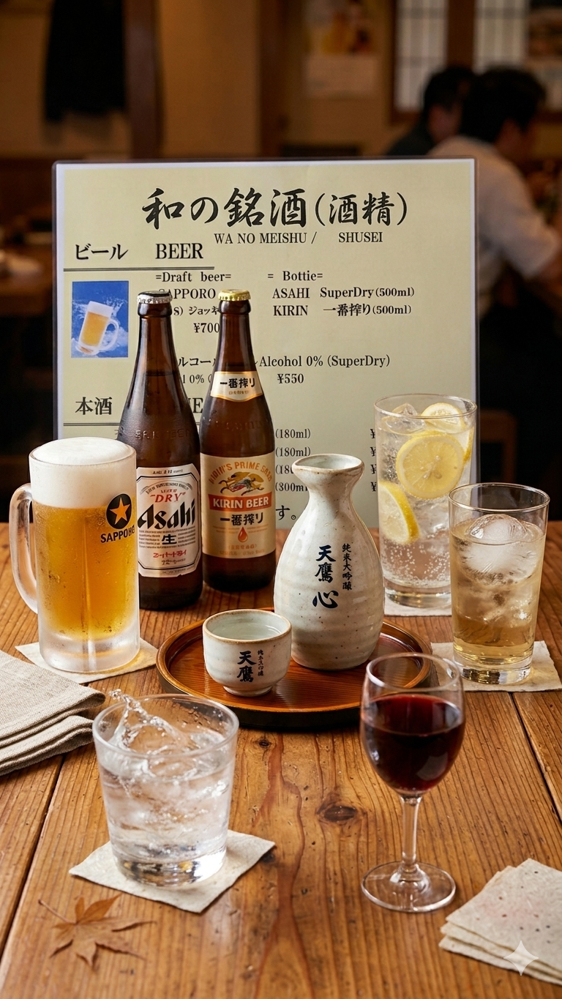

那須ミッドシティホテル 1階レストラン
Nasu Mid-City Hotel 1F Restaurant
お一人様でも、家族でも。那須の夜を、あなたらしく
Solo or Family. Enjoy your night your way.
出張のビジネスマンがお一人様で気軽に立ち寄れる「ちょい飲み」から、
週末の家族団らんまで。
那須の食材にこだわった、ホテルレストランの安心品質を
親しみやすさでお届けします。
From a quick solo drink for business travelers to weekend family gatherings.
We deliver the reliable quality of a hotel restaurant
with the friendliness of an izakaya, featuring carefully selected Nasu ingredients.
お一人様でも入りやすい。¥1,500から楽しめる「ちょい飲みセット」をご用意
Easy to enter alone. 1,500 yen "Quick Drink Sets" available.
週末は家族でシェア。シェフ一押しの料理やセットメニューで団らんのひとときを
Share with family on weekends. Enjoy the chef's recommended dishes and set menus.
那須野が原の新鮮野菜と栃木の食材を使った、ここだけの味わい
Unique flavors using fresh vegetables from Nasu and local Tochigi ingredients.
※料金には全て消費税が含まれています。 (All prices include consumption tax.)
一日の終わりに。那須の味覚を楽しみながら、心も体もお疲れ様の一杯を
The perfect way to wind down. Savor authentic local flavors with our high-value set menu.
1時間でサッと飲んで帰れる、ビジネスマンの定番
A perfect choice for business travelers. Quick and satisfying.
ドリンクメニュー
Drink Menu
